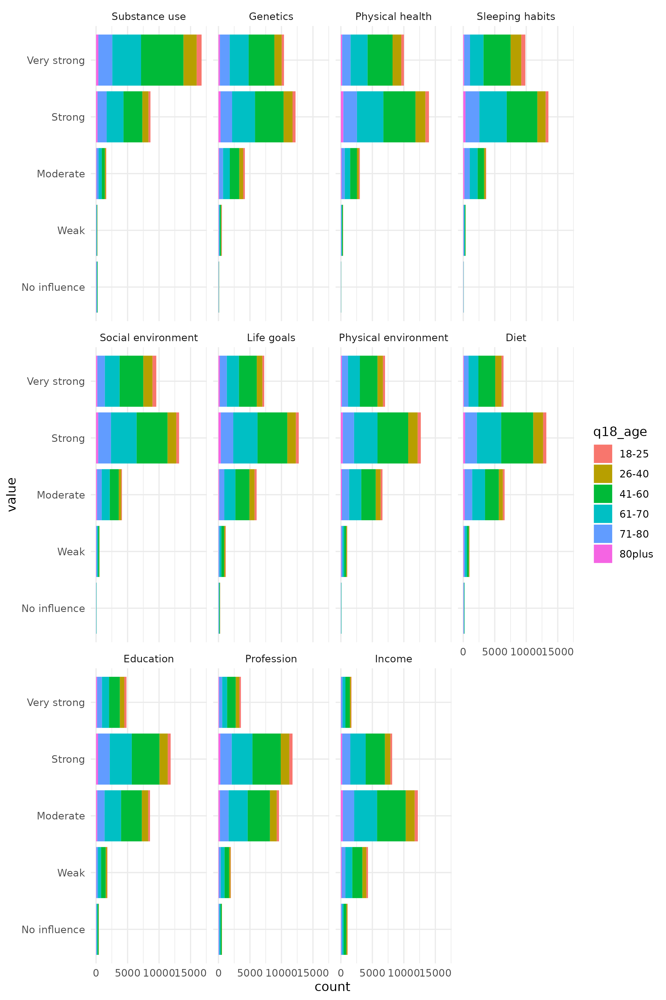

Between June 2019 and August 2020, Lifebrain conducted the Global Brain Health Survey to collect data on people’s perceptions of brain health and willingness to take care of their brain by adopting new lifestyles. The survey was conducted online and translated into 14 languages to reach as many people as possible. In total, it collected 27,590 responses from people in 81 countries.
Please read more about the survey, its publications and the collaborators we worked with on the Lifebrain webpates.
This package contains the cleaned data from this survey, along with tools to access the raw data, and scripts used to create reports for publication.
Accessing and working with the data
The data can be loaded as most R users would be used to loading built-in package data. When the package is installed, you can call the gbhs object, and view the data.
library(gbhs)
gbhs
#> # A tibble: 27,590 × 107
#> form_id submis…¹ langu…² langu…³ conse…⁴ age educa…⁵ gender q01_t…⁶ q02_d…⁷
#> <dbl> <dbl> <chr> <chr> <chr> <ord> <fct> <fct> <ord> <ord>
#> 1 114338 4903486 english en Yes 26-40 "Grad\… Male Occasi… Modera…
#> 2 114338 4913285 english en Yes 26-40 "Grad\… Male Freque… Very s…
#> 3 114338 4933808 english en Yes 26-40 "Grad\… Male Freque… Very s…
#> 4 114338 4936886 english en Yes 26-40 "Grad\… Female Freque… Very s…
#> 5 114338 4948775 english en Yes 41-60 "Grad\… Female Rarely Strong
#> 6 114338 4948924 english en Yes 41-60 "Grad\… Male Freque… Strong
#> 7 114338 4948993 english en Yes 41-60 "Grad\… Female Freque… Very s…
#> 8 114338 4949203 english en Yes 41-60 "Grad\… Female Occasi… Very s…
#> 9 114338 4949947 english en Yes 26-40 "Grad\… Female Occasi… Strong
#> 10 114338 4950500 english en Yes 71-80 "Grad\… Male Freque… Strong
#> # … with 27,580 more rows, 97 more variables: q02_education_infl <ord>,
#> # q02_genetics_infl <ord>, q02_income_infl <ord>, q02_lifegoals_infl <ord>,
#> # q02_physenv_infl <ord>, q02_physhealth_infl <ord>,
#> # q02_profession_infl <ord>, q02_sleep_infl <ord>, q02_socenv_infl <ord>,
#> # q02_substance_infl <ord>, q03_adolescence <ord>, q03_child <ord>,
#> # q03_middle <ord>, q03_older <ord>, q03_womb <ord>, q03_youngadult <ord>,
#> # q04_brain_disease <chr>, q05_alcohol_gen <ord>, q05_diet_gen <ord>, …The data has mainly been prepared with the tidyverse collection of packages, and as such, we will continue showcasing a couple of things that you could do with the data.
library(tidyverse)
#> ── Attaching packages ─────────────────────────────────────── tidyverse 1.3.2 ──
#> ✔ ggplot2 3.3.6 ✔ purrr 0.3.4
#> ✔ tibble 3.1.8 ✔ dplyr 1.0.10
#> ✔ tidyr 1.2.1 ✔ stringr 1.4.1
#> ✔ readr 2.1.2 ✔ forcats 0.5.2
#> ── Conflicts ────────────────────────────────────────── tidyverse_conflicts() ──
#> ✖ dplyr::filter() masks stats::filter()
#> ✖ dplyr::lag() masks stats::lag()
# Have only answers from Norway
gbhs |>
filter(q19_residence == "Norway")
#> # A tibble: 3,549 × 107
#> form_id submis…¹ langu…² langu…³ conse…⁴ age educa…⁵ gender q01_t…⁶ q02_d…⁷
#> <dbl> <dbl> <chr> <chr> <chr> <ord> <fct> <fct> <ord> <ord>
#> 1 114338 4903486 english en Yes 26-40 "Grad\… Male Occasi… Modera…
#> 2 114338 4948775 english en Yes 41-60 "Grad\… Female Rarely Strong
#> 3 114338 4948924 english en Yes 41-60 "Grad\… Male Freque… Strong
#> 4 114338 4948993 english en Yes 41-60 "Grad\… Female Freque… Very s…
#> 5 114338 4949203 english en Yes 41-60 "Grad\… Female Occasi… Very s…
#> 6 114338 4949947 english en Yes 26-40 "Grad\… Female Occasi… Strong
#> 7 114338 4950500 english en Yes 71-80 "Grad\… Male Freque… Strong
#> 8 114338 4951870 english en Yes 26-40 "Grad\… Female Occasi… Very s…
#> 9 114338 4954547 english en Yes 26-40 "Grad\… Male Freque… Modera…
#> 10 114338 4955322 english en Yes 41-60 "Grad\… Female Freque… Modera…
#> # … with 3,539 more rows, 97 more variables: q02_education_infl <ord>,
#> # q02_genetics_infl <ord>, q02_income_infl <ord>, q02_lifegoals_infl <ord>,
#> # q02_physenv_infl <ord>, q02_physhealth_infl <ord>,
#> # q02_profession_infl <ord>, q02_sleep_infl <ord>, q02_socenv_infl <ord>,
#> # q02_substance_infl <ord>, q03_adolescence <ord>, q03_child <ord>,
#> # q03_middle <ord>, q03_older <ord>, q03_womb <ord>, q03_youngadult <ord>,
#> # q04_brain_disease <chr>, q05_alcohol_gen <ord>, q05_diet_gen <ord>, …
# Have only answers from Norway
# And key variables + question 2
gbhs |>
filter(q19_residence == "Norway") |>
select(1:3, starts_with("q02"))
#> # A tibble: 3,549 × 14
#> form_id submission_id langu…¹ q02_d…² q02_e…³ q02_g…⁴ q02_i…⁵ q02_l…⁶ q02_p…⁷
#> <dbl> <dbl> <chr> <ord> <ord> <ord> <ord> <ord> <ord>
#> 1 114338 4903486 english Modera… Strong Modera… Weak Very s… Strong
#> 2 114338 4948775 english Strong Very s… Strong Modera… Strong Strong
#> 3 114338 4948924 english Strong No inf… Strong No inf… Modera… Modera…
#> 4 114338 4948993 english Very s… Very s… Strong Modera… Strong Very s…
#> 5 114338 4949203 english Very s… Strong Strong Strong Strong Strong
#> 6 114338 4949947 english Strong Strong Very s… Modera… Strong Strong
#> 7 114338 4950500 english Strong Very s… Very s… Modera… Strong Modera…
#> 8 114338 4951870 english Very s… Modera… Strong Modera… Strong Strong
#> 9 114338 4954547 english Modera… Modera… Strong Weak Modera… Modera…
#> 10 114338 4955322 english Modera… Modera… Strong Modera… Modera… Strong
#> # … with 3,539 more rows, 5 more variables: q02_physhealth_infl <ord>,
#> # q02_profession_infl <ord>, q02_sleep_infl <ord>, q02_socenv_infl <ord>,
#> # q02_substance_infl <ord>, and abbreviated variable names ¹language,
#> # ²q02_diet_infl, ³q02_education_infl, ⁴q02_genetics_infl, ⁵q02_income_infl,
#> # ⁶q02_lifegoals_infl, ⁷q02_physenv_infl
library(ggplot2)
gbhs |>
ggplot(aes(y = q19_residence, group = q18_age, fill = q18_age)) +
geom_bar() +
theme_minimal()